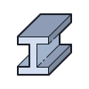
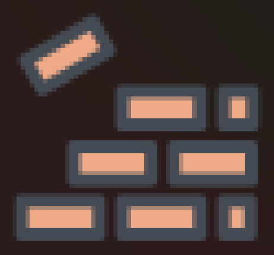

Structural Revit productivity
Purpose-built commands for sheet production, schedule exchange, model modification, numbering and quality checks—all inside the Revit environment.
Annotations & Sheets6 tools
Create Sheets
Reads a workbook and creates Revit sheets from Sheet Number, Sheet Name and Title Block. Drawing Category and Drawing Series parameters are filled at the same time.
Workbook columnsSheet Number, Sheet Name, 01 - Drawing Category, 02 - Drawing Series, Title BlockAssign Views on Sheets
Places one or more views on selected sheets. Multi-view matching uses similar sheet and view names; placement can use typed millimetres or picked reference points, and picked coordinates are reused across target sheets.
Use caseStandardise plan and section placement across an entire drawing set.Export Drawings
Exports printable sheets as PDF, DWG or DWF. Choose sheets, print sets or a revision, then customise filename fields and the output folder. DWG output uses the KLD CAD Layers setup.
Use caseIssue a coordinated drawing package without manual plotting.Export & Import Schedules
Exports a Revit schedule to .xlsx and imports eligible edits back. Rows match by element GUID, with Element ID as fallback; calculated and read-only fields are skipped. Blank cells mean “no change” and type-parameter edits must agree across rows of the same type.
Use caseLet the team edit schedule data in Excel and bring it back safely.Annotation Fixer
Checks selected sheets for views, legends, schedules and text notes outside the title block. Optionally aligns an issue to a correctly positioned example on another sheet.
Use caseCatch layout mistakes before sheets are issued.Element History
Start or stop change logging, or inspect selected elements. The log records added and modified elements; worksharing data can include creator, last editor and checkout status.
Log fileDocuments\Revit_Element_Log.txtModel Modification2 tools
Apply Coping
Finds intersecting structural bracing members and applies coping. Columns can also be included as cutting members.
Use caseAuto-cope brace connections instead of editing every member individually.Join Geometry
Works on elements visible in the active view. Choose two categories and optionally choose which category cuts the other for newly created joins. Existing join order is left unchanged.
Use caseCleanly join beams and columns across an entire floor in one operation.Beam Tools3 tools
Concrete Beam Number
Numbers framing with Structural Material = KLD_STR_Concrete_IN-SITU. Horizontal beams go first, followed by vertical beams; results are written to Mark.
Use caseNumber an entire concrete floor plate without manual mark edits.
Steel Beam Number
Numbers framing with Structural Material = KLD_STR_STEEL_HOT ROLLED. Uses the same plan-view order and adds the SB prefix to Mark.
Use caseKeep steel and concrete marks separate across a large model.Beam Coordinates
Pick structural framing members and write start, end and centre X/Y values in survey-point coordinates.
Use casePrepare beam setting-out data without manual lookups.Column Tools2 tools
Column Number
Groups selected columns into vertical runs using footprint overlap and assigns one Mark per run. Supports steeply inclined runs and separately numbers columns marked Remarks_Shared = FC. Choose prefix C, TC or FC and enter a starting number.
Use caseKeep stacked tower columns consistently marked across multiple levels.Column Split
Select columns and choose the levels where they should split. New segments keep the original Mark and use zero base and top offsets. Unconnected-height columns are skipped.
Use caseSplit double-height columns at slab levels without rebuilding them.Pile Tools3 tools
Pile Coordinates
Processes structural foundations and writes coordinates transformed from Revit internal coordinates to survey-point coordinates.
Use casePrepare pile setting-out information directly from the model.Pile Number
Numbers selected piles or host families. Set the prefix, start number, family-name filter, numbering direction and starting reference; results are written to Pile Number.
Use caseNumber large pile layouts consistently in one pass.Pile Spacing
Checks M_Pile-Round Pipe piles in the active view against a minimum centre-to-centre distance of a chosen factor times pile diameter. Violating piles are highlighted red.
Use caseCatch spacing clashes before they reach the drawings.Wall Tools2 tools

Wall Number
Numbers selected walls by plan position and writes the result to Mark. Choose prefix W, TW, RW or WT and a starting number.
Use caseOrganise basement and core wall marks quickly before documentation.Wall Split
Select walls and choose which levels should become split points. New wall segments keep the original Mark and use zero base and top offsets. Walls without a top constraint are skipped.
Use caseSplit retaining and core walls at staged-pour levels in seconds.Review every result
The suite supports repetitive work, but professional review remains essential. Verify outputs and keep project backups before issuing models, drawings or schedules.
Get the extension